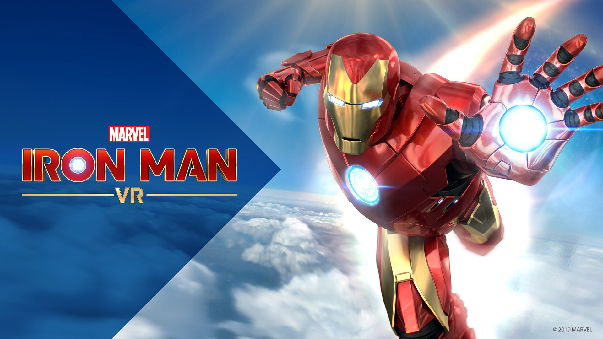
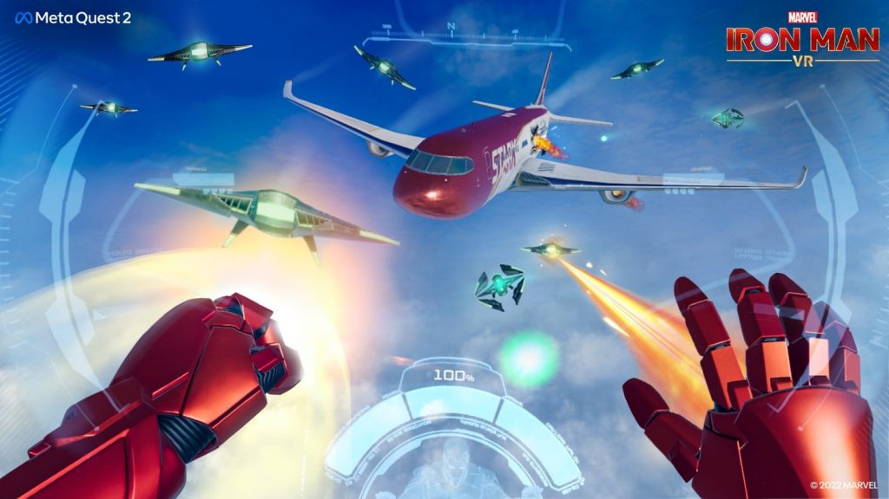
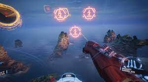
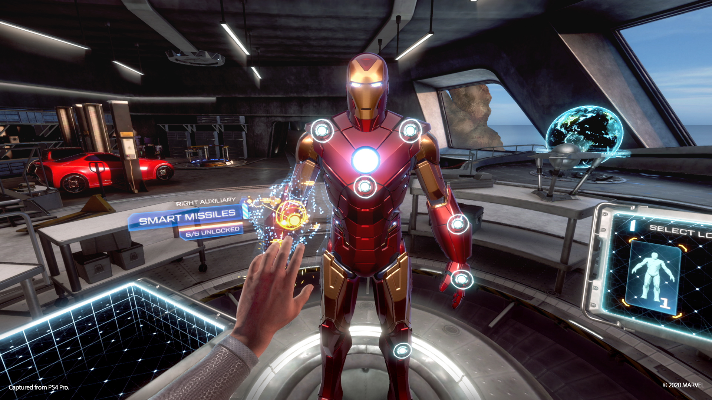
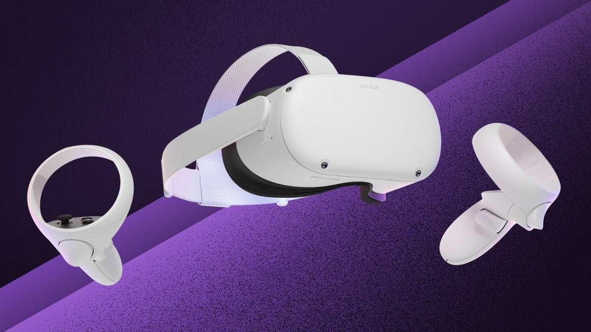
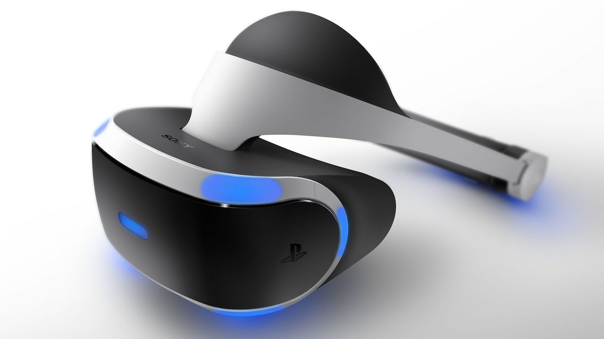

Most people who are familiar with the Marvel Studios’ movies popularly known as the Marvel Cinematic Universe (MCU) know that Iron Man (Tony Stark) plays a crucial role in the vast 22-movie “Infinity Saga”. Iron Man is the first Superhero that was introduced in this movie series and has been the leading superhero that has looked after, driven his peers and other superheroes being a “genius, billionaire, playboy, philanthropist”.

Marvel’s Iron Man VR is a virtual reality game that was introduced initially on the PlayStation VR in the year 2020 that allowed users to step into the shoes of the well renowned superhero not literally but virtually, and play around fighting an army of bots and completing missions. The game gives the user a chance to see what it would look like from a first person perspective being in the Iron Man suit, and fly around using the two controllers.
Review
GamePlay
Is this Game a Good Use of VR?
I think that the game is an amazing use of the concept of virtual reality since it allows the user to simulate something that cannot be actually performed in the real world, or at-least something that is not going to be implemented or physically available to try in the near future. Even if it were something that a person could physically try out it would be something expensive, dangerous and won’t allow them to fire or fight with an army of robots. Thus having this game in VR reality can provide for people to get fictional experiences of flying at high altitudes in the comfort of their homes.
The concept is a great way for players to mimic the way iron man flies around as shown in the comics, movies and animated series. For example the way people fly in the game changes according to the position of the two VR controllers which are supposed to act like the “Repulsors” that act as Iron Man’s tools for fight and flight.

When the VR headset is put on, we see everything like the way Tony Stark sees when he puts on the helmet with data like the information of the state of the suit, the person who is calling and the information that Stark’s personal AI Assistant “F.R.I.D.A.Y” is trying to show the player in the form of Holographic complications.
If this game were to be run on a normal gaming console using DualShock or an Xbox Controller, it would not be as immersive as it would be in a Virtual Reality environment. With the power of virtual reality, people are able to interact with objects and play as if they are being placed physically inside the scene, move around Tony Stark’s mansion and have a feeling as if the players themselves are Tony Stark.
Even though games like Call of Duty, Halo are played in a first person perspective where the player is supposed to be playing from the character’s perspective, they are not immersive because the player is expected to play from the limitations of a 2-Dimensional Screen and not an immersive Virtual Reality experience. In other words Iron Man VR is unlike other games that forces a player to understand a character’s perspective instead it allows the player to be the character, immerse themselves in the fantasy of being a superhero which is not confined to the limitations of a Dual-Shock (or any other) controller.

Intended Users
The Game’s target audience are the people who are fans of the marvel comics, movies and games.
The Game is published by Sony Interactive Experiences which is known for their famous game of another popular Marvel character - Your Friendly Neighbourhood SpiderMan.
Insomniac Games’ “Marvel’s Spiderman” and “Spiderman : Miles Morales” have been most popular on the PlayStation 4 and the recently released PlayStation 5.
T he game was originally released for PS VR with those who owned a PlayStation 4 console. But Was released with a remastered version for Oculus Quest 2 on November 3rd, where people do not need to have a gaming console to be able to play the game.
The game has received a Teen Rating by the Entertainment Software Ratings Board (ESRB) which means that it is not to be used by anyone of age 12 or under. The game can be enjoyed by anyone who is familiar with the character and is comfortable with VR Environments. Flying around is fairly easy to learn and get used to, so people just need to spend some time playing around with how movement is affected by the position of the controllers.
In Summary, Iron Man VR is a game that can be enjoyed from teens to adults and has become pretty accessible to people with the recent release of the Oculus Quest 2.
Pros and Cons
Pros
Iron Man VR is an immersive experience that is accessible to any one who owns a PlayStation 4 or PlayStation 5 Console and a PS VR headset and has been on Meta Quest 2 since November 3rd this year.
In case of limitation of space and moving around, players need not worry! Players can stay stationary with arm lengths of space around them and are free to enjoy the game and move around different areas in the game by teleporting to the marked points such as different areas in Tony Stark’s Mansion.

Customization: Players can customize their Iron Man Suit with the options provided to make Iron Man’s look like the various suits in the comics such as the Mark 47 or the Iron Patriot Suit and also allows the players the ability to upgrade parts of the suit for a better fight and flight experience.

With the new release of the game on the Meta Quest 2, the game is more fluid and immersive with the multi-camera tracking system that the headset provides.
Movement is restricted to the upper body while wearing the suit while flying to avoid running into objects.
Cons
The Game puts you into the perspective of being inside the Iron Man Suit and flying around and thus is not advisable for people affected with vertigo, motion sickness or any other conditions caused by simulating a rollercoaster-like scenario.

The Game’s Initial Release on PlayStation VR, limited tracking of the headset around the in a given space by a single camera tracking system that uses the camera for the PlayStation Move, and thus it does not allow the player an entire freedom of movement, because if the person chooses to take a 180 degree turn from the camera, the headset will not be able to be tracked since the lights that act as tracking markers are in the front of the headset.
Thus people who play the game on PSVR cannot enjoy the game in full mobility unlike the game on the Meta Quest 2.
The game has repetitive tasks in the missions which fails to keep the player interested.
Citations
Review by IGN : https://www.youtube.com/watch?v=1N5VuncGhqc
Game Play : https://www.youtube.com/watch?v=i6bUuvmgVrc&t=5467s
Iron Man on Meta Quest AD : https://www.youtube.com/watch?v=qOs66S6zWKM
Review for Game on Meta Quest : https://www.youtube.com/embed/I1g8gTtXQPY